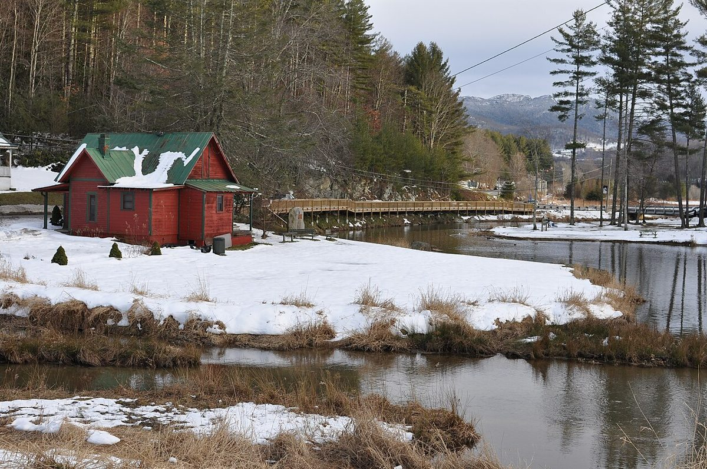

Make room for one good stop
Choose a café and a town stroll, with Tate-Evans Park as a possible outdoor pause. Trade this for another High Country stop so the day still leaves time for your Boone evening.
NORTH CAROLINA · OPTIONAL DISCOVERY
An optional variation for your November road trip. Add it only if it suits your pace; no extra overnight or reservation is assumed.
THE FEEL OF THE PLACE
Banner Elk is a compact High Country detour with cafés, a college-town edge from Lees-McRae and the larger mountain setting of Sugar and Beech nearby. It suits a lunch-and-stroll variation when you would rather trade another hike for town time. Keep it optional on Tuesday: adding it alongside every Linville and Blowing Rock stop would make the daylight plan too crowded.

Representative photograph from the linked archive; seasons and current conditions will differ.
AN OPTIONAL CHANGE OF PACE
Choose a café and a town stroll, with Tate-Evans Park as a possible outdoor pause. Trade this for another High Country stop so the day still leaves time for your Boone evening.
EAT WELL, KEEP IT SIMPLE
Casual choices for this stop, with restaurant information and independent reviews or local guides to help you choose. Published prices exclude extras unless noted; recheck hours before setting off.
Coffee and light meals in the Tynecastle area on NC-105, not downtown Banner Elk. A useful road stop near Grandfather Mountain, with bagels, croissants and burritos.
Budget: Published official menu PDF lists breakfast burrito $8 and pimento-cheese croissant $6; PDF dates from 2024, so confirm current prices.
When to go: Official Mon–Sat hours 7am–3pm; deli closes 30minutes earlier. Fits Tuesday breakfast/lunch.
A central all-day café with breakfast, sandwiches and a second kitchen/menu. Choose simple café dishes for an economical stop; it is a moderate-price option rather than a guaranteed cheap meal.
Budget: Current official menu linked; exact dish prices not confidently matched from the published menu. Compare sandwiches/breakfast before ordering.
When to go: Official café hours Sunday–Thursday 7am–9pm; lodge/tavern hours differ.
CHECK BEFORE YOU GO
Check opening hours and road or trail access shortly before travel. Keep the detour flexible around daylight and your next stop.